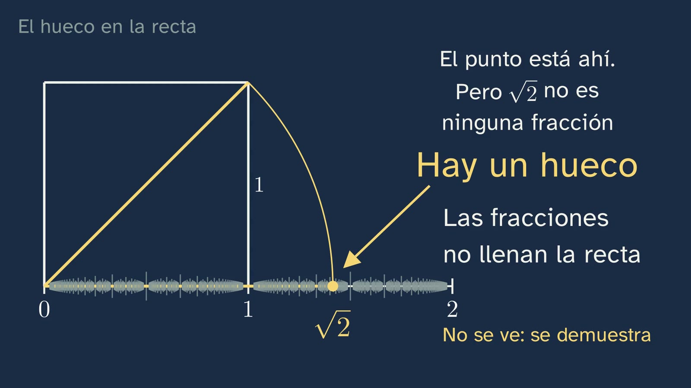
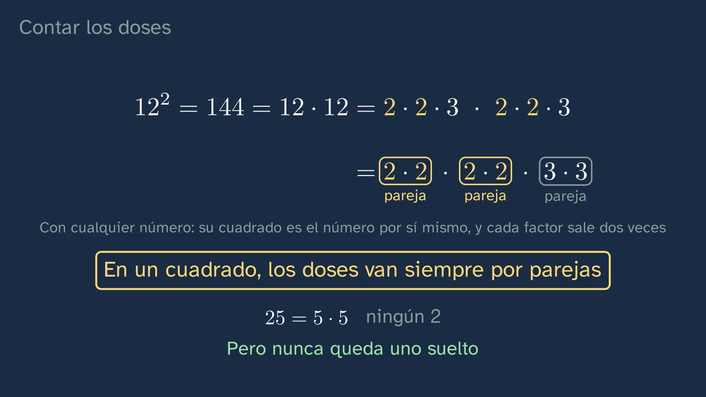
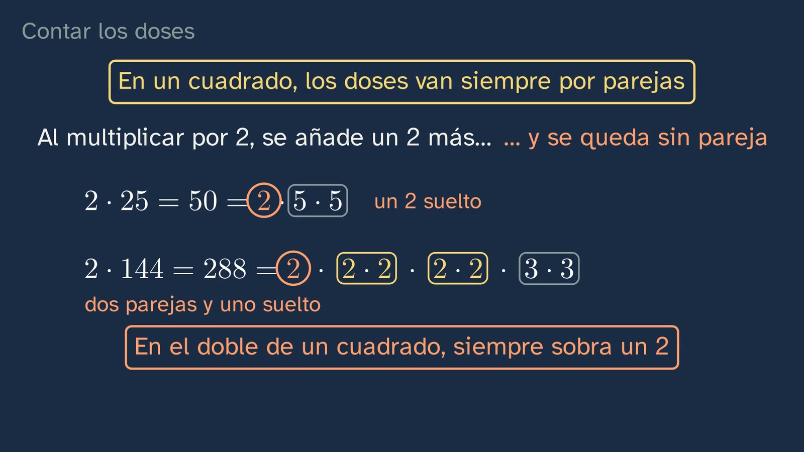

La diagonal imposible
En pocas palabras
La clase responde a la apuesta que dejó abierta la primera: si marcamos en la recta todas las fracciones, ¿queda algún hueco? Empieza por un objeto real, la tablilla babilónica YBC 7289, en la que alguien anotó hace más de 3.500 años un número que se queda a menos de una millonésima de la raíz de 2. ¿Se podría escribir exacta? Ximena prueba decimales, que también son fracciones (1,4 y 1,5; 1,41 y 1,42), y ninguno da 2 al elevarlo al cuadrado. El alumnado apuesta si alguna fracción acertará, y la clase le enseña que mirar casos no basta: hace falta razonar. Llega entonces la herramienta, la reducción al absurdo, en tres pasos, y con ella una sola demostración, la de contar los doses. En un cuadrado, los doses de su descomposición en factores primos van por parejas; en el doble de un cuadrado, sobra uno. Si √2 fuera a/b, el número a² = 2b² tendría las dos cosas a la vez, y eso no puede ser, porque un número se descompone en primos de una sola manera (el teorema fundamental de la aritmética, que la clase nombra y usa sin demostrar). Con eso se responde a la apuesta: la diagonal, tumbada con un compás, cae en un punto que ninguna fracción marca. Hay huecos. Sus números se llaman irracionales y, por lo visto en la clase 1, sus decimales ni se acaban ni se repiten. El error típico, «es irracional porque tiene infinitos decimales», se desmonta con 1/3, y la calculadora queda en su sitio: lo que enseña se acaba, así que es una fracción, una aproximación. La tablilla tampoco podía ser exacta, porque su número es una suma de fracciones. Ximena se despide con la frase que hay que recordar: mirar no demuestra; razonar, sí.
Objetivo. Al terminar, el alumnado sabrá demostrar por reducción al absurdo que la raíz de 2 no es una fracción, y explicar por qué, entonces, las fracciones no llenan la recta: hay números irracionales, cuyos decimales ni se acaban ni se repiten.
Lo que esta ficha añade. La clase sigue un solo camino, a propósito. Lo que no cabe en él está aquí, para el profesorado que lo quiera: la demostración de los doses explicada a fondo, con la historia del teorema fundamental de la aritmética y su relación con la demostración clásica de pares e impares; una segunda demostración, con cuadrados, como actividad de aula; y, en «Lo que la clase deja fuera», la lectura completa de la tablilla, la regla de Teón de Esmirna, la demostración completa más antigua que se conserva y la leyenda de Hípaso, contada como leyenda.
En toda la clase, «fracción» quiere decir número racional: 2/4 y 1/2 son la misma.
Currículo
Real Decreto 243/2022, Matemáticas I, materia de la modalidad de Ciencias y Tecnología de 1.º de Bachillerato (texto consolidado del BOE, comprobado el 30/09/2026; su última actualización, del 02/07/2026, no toca el anexo de Matemáticas). Los minutos son los del vídeo.
| Elemento | Qué dice el decreto | Dónde se trabaja |
|---|---|---|
| Saber básico A.1 (A. Sentido numérico, 1. Sentido de las operaciones) | «Estrategias para operar con números reales y vectores: cálculo mental o escrito en los casos sencillos y con herramientas tecnológicas en los casos más complicados.» | De refilón, y conviene saberlo: las soluciones de la clase 1 (0:40), el número de la tablilla pasado a decimal con la calculadora (3:57) y los cuadrados de 1,4, 1,5, 1,41 y 1,42 (5:04). La clase no opera con irracionales; eso llega en el tema 2 (véase «Lo que la clase deja fuera») |
| Saber básico C.3 (C. Sentido espacial, 3. Visualización, razonamiento y modelización geométrica) | «Conjeturas geométricas en el plano: validación por medio de la deducción y la demostración de teoremas.» | Dicho con honestidad: la conjetura es geométrica y la validación, aritmética. La pregunta nace en la geometría: la diagonal del cuadrado de lado 1, que por Pitágoras mide √2 (4:10), ¿cae en una fracción cuando se tumba sobre la recta (11:07)? Se valida deduciendo, pero con números: la demostración de los doses (9:10). Es lo que la descripción de la competencia 5 llama «utilizar ideas procedentes de un contexto para probar o refutar conjeturas generadas en otro contexto diferente». La validación con figuras, geométrica de verdad, está en la actividad de esta ficha |
| Saber básico F.1 (F. Sentido socioafectivo, 1. Creencias, actitudes y emociones) | «Tratamiento del error, individual y colectivo como elemento movilizador de saberes previos adquiridos y generador de oportunidades de aprendizaje en el aula de matemáticas.» | El error «es irracional porque tiene infinitos decimales», con pausa para que el alumnado encuentre qué falla (12:27), y el de fiarse de la pantalla de la calculadora (13:10). Y el ejercicio 2, que pide encontrar el paso que falla en una demostración |
| Saber básico F.3 (F. Sentido socioafectivo, 3. Inclusión, respeto y diversidad) | «Valoración de la contribución de las matemáticas y el papel de matemáticos y matemáticas a lo largo de la historia en el avance de la ciencia y la tecnología.» | La tablilla de hace más de 3.500 años (2:49), el estudio de David Fowler y Eleanor Robson (4:39) y Aristóteles (10:51). Con poco peso: unos dos minutos y medio de la clase |
| Competencia específica 2 | «Verificar la validez de las posibles soluciones de un problema empleando el razonamiento y la argumentación para contrastar su idoneidad.» | Comprobar con números lo que dice la demostración: 1,4 = 7/5, y 49 frente a 50 (10:25); no fiarse de la pantalla (13:10); y el ejercicio 2, que obliga a revisar paso a paso una demostración que no puede valer. La descripción de la competencia habla de «la selección entre diferentes modos de comprobación de soluciones» |
| Competencia específica 3 | «Formular o investigar conjeturas o problemas, utilizando el razonamiento, la argumentación, la creatividad y el uso de herramientas tecnológicas, para generar nuevo conocimiento matemático.» | La apuesta de hoy (5:56, con pausa) y la de la clase 1 (0:03), convertidas en un teorema. Su descripción lo dice así: «Probar o refutar conjeturas con contenido matemático sobre una situación planteada o sobre un problema ya resuelto implica plantear nuevas preguntas» |
| Competencia específica 5 | «Establecer, investigar y utilizar conexiones entre las diferentes ideas matemáticas estableciendo vínculos entre conceptos, procedimientos, argumentos y modelos para dar significado y estructurar el aprendizaje matemático.» | Geometría (Pitágoras, la diagonal, la recta), aritmética (los factores primos) y los decimales de la clase 1 (0:19 y 12:16), al servicio de un mismo resultado. La segunda solución de la clase 1 (1:13) ya usa los factores primos que sostienen la demostración |
| Competencia específica 6 | «Descubrir los vínculos de las matemáticas con otras áreas de conocimiento y profundizar en sus conexiones, interrelacionando conceptos y procedimientos, para modelizar, resolver problemas y desarrollar la capacidad crítica, creativa e innovadora en situaciones diversas.» | Con la Historia (un documento real, leído distinguiendo lo que pone, lo que calculamos y lo que interpretan los especialistas) y con la Filosofía (Aristóteles; la pregunta abierta, 15:05) |
| Competencia específica 9 | «Utilizar destrezas personales y sociales, identificando y gestionando las propias emociones, respetando las de los demás y organizando activamente el trabajo en equipos heterogéneos, aprendiendo del error como parte del proceso de aprendizaje y afrontando situaciones de incertidumbre, para perseverar en la consecución de objetivos en el aprendizaje de las matemáticas.» | La apuesta, sin castigo para quien falla; Ximena a mitad de clase (11:02): «no es que no hayamos encontrado esa fracción. Es que no existe»; y el error típico, planteado con respeto (12:27) |
| Criterio 2.1 | «Comprobar la validez matemática de las posibles soluciones de un problema, utilizando el razonamiento y la argumentación.» | La comprobación con 7/5 (10:25) y el ejercicio 2 |
| Criterio 3.1 | «Adquirir nuevo conocimiento matemático a partir de la formulación de conjeturas y problemas de forma guiada.» | La apuesta (5:56) y su demostración, guiada paso a paso (9:10). El alumnado la repite con la raíz de 3 (ejercicio 1) |
| Criterio 3.2 | «Emplear herramientas tecnológicas adecuadas en la formulación o investigación de conjeturas o problemas.» | Fino en el vídeo: la calculadora para pasar la tablilla a decimal (3:57) y para probar decimales (5:52). La opción con hoja de cálculo de la actividad lo trabaja de verdad |
| Criterio 5.1 | «Manifestar una visión matemática integrada, investigando y conectando las diferentes ideas matemáticas.» | Decimales, factores primos, geometría y la recta, conectados en una sola pregunta |
| Criterio 6.2 | «Analizar la aportación de las matemáticas al progreso de la humanidad, reflexionando sobre su contribución en la propuesta de soluciones a situaciones complejas y a los retos científicos y tecnológicos que se plantean en la sociedad.» | Sólo una parte, y hay que decirlo: la clase enseña la historia de un resultado y cómo una demostración matemática se convirtió en modelo de razonar (Aristóteles), no su aportación a retos científicos o tecnológicos |
| Criterio 9.1 | «Afrontar las situaciones de incertidumbre identificando y gestionando emociones y aceptando y aprendiendo del error como parte del proceso de aprendizaje de las matemáticas.» | La apuesta y el error típico |
Lo que hay que traer de la ESO (Real Decreto 217/2022, texto consolidado, sin cambios desde su publicación). De 1.º a 3.º: «Factores, múltiplos y divisores. Factorización en números primos para resolver problemas: estrategias y herramientas» (A.4), para la segunda solución de la clase 1 y para toda la demostración; «Relaciones geométricas como la congruencia, la semejanza y la relación pitagórica en figuras planas y tridimensionales: identificación y aplicación» (C.1), para la diagonal; y «Relaciones inversas entre las operaciones (adición y sustracción; multiplicación y división; elevar al cuadrado y extraer la raíz cuadrada)» (A.3). Un matiz: el decreto pide factorizar, pero no dice que la descomposición sea única. El alumnado lo usa sin nombrarlo (al calcular el máximo común divisor, por ejemplo), y por eso la clase lo presenta como lo que es, un teorema demostrado (7:47). De la clase 1 del tema: los decimales de una fracción se acaban o se repiten y, al revés, un decimal que se acaba o se repite es una fracción; y entre dos fracciones siempre cabe otra. En 4.º, la palabra «irracional» puede haber llegado o no: Matemáticas A pide «Algunos números irracionales en situaciones de la vida cotidiana» (A.3), y Matemáticas B, «Los conjuntos numéricos (naturales, enteros, racionales y reales): relaciones entre ellos y propiedades» (A.3). La clase no la da por sabida: la define. Y demostrar ya era una manera de trabajar en la ESO: su competencia 3 habla de «promoviendo el uso del razonamiento y la demostración como aspectos fundamentales de las matemáticas» (descripción).
Cómo está construida la clase
Capítulos del vídeo
Casi dieciséis minutos (15:52), en once capítulos, con un solo camino: la pregunta (la tablilla), el intento (probar decimales), la herramienta (el absurdo), la demostración (contar los doses) y sus consecuencias (el hueco, los irracionales, sus decimales y el error típico). Sigue las bases formativas del canal y lo que el decreto pide a Matemáticas I: los procesos de «la formulación de preguntas, el establecimiento de conjeturas, la justificación y la generalización» (introducción de la materia). Ximena sale a cámara cuatro veces, unos veinte segundos en total: al saludar (0:00), con el gancho (2:49), a mitad (11:02) y al despedirse (15:44).
| Capítulo | Qué pasa | Por qué así |
|---|---|---|
| Qué vamos a ver (0:00) | Ximena saluda. En la pizarra, el mapa de las seis clases del tema, con la de hoy resaltada, y la apuesta de la clase 1: ¿queda algún hueco? «Hoy lo sabremos.» | Saber dónde se está y adónde se va ordena lo que se aprende. La apuesta sigue abierta desde la clase anterior. |
| Una pregunta de la clase anterior (0:19) | ¿Cómo son los decimales de una fracción? Pausa (0:22). «O se acaban, o se repiten. Siempre.» Y también al revés. «Guarda bien las dos cosas.» | Recuperar antes de oír la respuesta. Las dos direcciones hacen falta hoy: la primera para 1/12 (1:51); la recíproca, para los decimales de los irracionales (12:16) y para la tablilla (13:29). |
| Las soluciones de la clase anterior (0:40) | 0,4545… = 45/99 = 5/11, con el porqué del ×100. Por qué 1/8 se acaba y 1/12 no: un decimal que se acaba es un entero partido por un 1 seguido de ceros, y los únicos factores primos de un 1 seguido de ceros son el 2 y el 5; el 3 del 12 no se va. Tres fracciones entre 1/3 y 1/2, con el punto medio de la clase 1: para sumar, a sextos (2/6 + 3/6 = 5/6), y la mitad, 5/12; repitiendo, 3/8 y 11/24. «Y ahora sí, vamos con lo de hoy.» | Práctica espaciada, con el porqué y no sólo el resultado. La segunda solución estrena los factores primos que usará la demostración. |
| Una tablilla de barro (2:49) | El gancho, a cámara: «alguien escribió en barro un número casi exacto». YBC 7289 en foto, con su crédito: un cuadrado con sus dos diagonales y un número sobre una de ellas. El número, de cuatro cifras en base 60, leído como un reloj (una hora, 24 minutos, 51 segundos y 10 sesentavos de segundo) y pasado a horas con la calculadora: 1,41421296… Por Pitágoras, la diagonal del cuadrado de lado 1 mide √2 = 1,41421356…: cinco decimales iguales y menos de una millonésima de diferencia. Lo que concluyeron Fowler y Robson, como interpretación. La pregunta: ¿se podría escribir exacta, con más cifras? ¿Y con una fracción? | Un documento real, con su licencia y su crédito, que plantea la pregunta del día. La pizarra distingue lo que pone la tablilla, lo que calculamos nosotros y lo que interpretan los especialistas. |
| Buscando la fracción (5:04) | Probar decimales, que también son fracciones: 1,4² = 1,96 se queda corto y 1,5² = 2,25 se pasa; 1,41² = 1,9881 y 1,42² = 2,0164. En la recta, √2 queda encerrada en un tramo cada vez más corto. «Pruébalo tú con la calculadora, con tres o cuatro decimales» (5:52). La apuesta, con pausa (6:07): ¿acertaremos alguna vez? «Mirar casos, por muchos que sean, no demuestra que no la haya.» | El problema antes que la explicación, y predecir antes de ver. El límite de tres o cuatro decimales es deliberado: con más, la pantalla redondea (véase el error 2). |
| Razonar por el absurdo (6:27) | El método, con su nombre y sus tres pasos: supones que sí es posible, razonas paso a paso, llegas a algo que no puede ser. Un ejemplo de veinte segundos: no hay un entero que sea el más grande, porque n + 1 lo supera. | Primero la herramienta, en general y con un caso facilísimo, para que la demostración se reconozca como la misma jugada. |
| Contar los doses (7:14) | Lo que se trae de la ESO: todo entero mayor que 1 se descompone en factores primos, y de una sola manera. El 12, de dos maneras, da lo mismo; y «no es cosa del doce»: es un teorema demostrado, el teorema fundamental de la aritmética (7:47). En un cuadrado, los doses van por parejas: 144 = 12 · 12, con su porqué general (8:14) y el 25, que no tiene ninguno. Para y piensa (pausa en 8:42): ¿y en el doble de un cuadrado? Sobra un dos: 50 y 288. | Las dos reglas, antes de la demostración, con números concretos y con su razón general. La unicidad se dice como teorema, no como algo que se ve en el 12, para no contradecir lo que se acaba de decir: mirar casos no demuestra. |
| La demostración (9:10) | Tres pasos rotulados. Suponemos √2 = a/b, con a y b enteros positivos. Razonamos: a² = 2b², un cuadrado a la izquierda y el doble de un cuadrado a la derecha. Absurdo: el mismo número no puede tener los doses por parejas y uno suelto. «La raíz de dos no es una fracción.» Comprobado con la primera que se probó: 1,4 = 7/5, y 49 = 7 · 7 no puede ser 50 = 2 · 5 · 5 (10:25). Aristóteles ya usaba este ejemplo para razonar por el absurdo (10:51). Ximena, a cámara: «no es que no hayamos encontrado esa fracción. Es que no existe». | Un ejemplo resuelto entero, con las dos reglas a la vista arriba. La primera fracción probada vuelve, ahora razonada. La toma a mitad repite lo importante, y lo avisa («Insisto»). |
| El hueco en la recta (11:07) | La respuesta a la apuesta de la clase 1: el cuadrado de lado 1, su diagonal tumbada con un compás, el punto donde cae. Aunque marquemos todas las fracciones, se queda sin marcar. «Cada hueco es un solo punto, más fino que cualquier raya. No lo vemos: lo sabemos, porque lo hemos demostrado.» Racionales e irracionales: las dos palabras vienen de «razón», que en matemáticas también es un cociente; «irracional» no quiere decir «ilógico». Y como, si sus decimales se acabaran o se repitieran, sería una fracción, ni se acaban ni se repiten. | El nombre llega después de la idea, y lo de los decimales se deduce de la clase 1 en vez de afirmarse. La pizarra avisa de que el hueco no se ve: se demuestra. |
| El error: «tiene infinitos decimales» (12:27) | «La raíz de dos es irracional porque tiene infinitos decimales. ¿Qué falla?» Pausa (12:36). 1/3 también los tiene. Lo que distingue a √2 es que no se acaban y nunca se repiten, y eso no se ve en la calculadora: lo que enseña se acaba, así que es una fracción, una aproximación; y si al elevar al cuadrado un decimal así la pantalla enseña un 2, redondea. Se sabe por la demostración. Y la respuesta a la tablilla: su número es una suma de fracciones, así que es una fracción y no podía ser exacto. | El error típico, planteado con respeto y desmontado razonando. Cierra la pregunta del gancho. |
| Para practicar y seguir pensando (14:04) | Recapitulación en cinco ideas. Tres ejercicios, con pausa (15:02): la raíz de 3, la raíz de 4 y 1 + √2. La pregunta abierta: los números, ¿se descubren o se inventan? (15:05). El anuncio de la clase 3, «La recta sin huecos», y la despedida: «mirar no demuestra; razonar, sí». | Las soluciones abren la clase siguiente. La pregunta abierta va también en los comentarios del vídeo. |
Puentes con otras materias. Filosofía: Aristóteles describe la reducción al absurdo con este mismo ejemplo y con los mismos tres pasos que la clase (véase «Lo que la clase deja fuera»); el decreto de Filosofía de 1.º pide «Nociones de lógica formal» (B.1) y trata «Entidades físicas y objetos ideales: el problema de los universales» (B.2), que es el terreno de la pregunta abierta. Historia: la tablilla es una fuente primaria, y la clase la lee separando lo que pone, lo que calculamos y lo que interpretan los especialistas. Física y Química: medir no demuestra. La diagonal de un cuadrado de un metro, medida al milímetro, da 1,414 m, que es una fracción; ninguna medida, por fina que sea, puede decir si una longitud es racional.

Plan de una sesión de 50 minutos
Pensado para ver el vídeo entero en clase, a trozos, con la hoja del alumnado.
| Minutos | Qué se hace |
|---|---|
| 0–5 | Sin vídeo, en parejas: «Antes de ver el vídeo», en la hoja. Descomponer 12, 25, 50, 144 y 288 y contar sus doses; la diagonal del cuadrado de lado 1; y buscar dos enteros con a² = 2b². No hace falta que acierten: es el problema antes que la explicación. |
| 5–8 | Vídeo de 0:00 a 2:49: el mapa, la pregunta de recuperar (parar en 0:22 y contestar de palabra) y las soluciones de la clase 1. Si ya se corrigieron en el aula, se salta de 0:40 a 2:49 y se ganan dos minutos. |
| 8–13 | Vídeo de 2:49 a 6:11: la tablilla, los decimales que se acercan y la apuesta. Parar en 6:07 y votar a mano alzada; cada cual apunta su apuesta en la hoja. Comparar con los intentos de las parejas: ¿alguien ha encontrado a y b con a² = 2b²? |
| 13–17 | Vídeo de 6:11 a 8:42: mirar no demuestra, la reducción al absurdo y las dos reglas. Parar en el «para y piensa» (8:42) y dejar un minuto en parejas: ¿qué pasa en el doble de un cuadrado? Lo pueden comprobar con el 50 y el 288 que ya han descompuesto. |
| 17–20 | Vídeo de 8:42 a 11:07: la demostración, la comprobación con 7/5, Aristóteles y Ximena a mitad. |
| 20–25 | Sin vídeo: la demostración con huecos de la hoja, cada cual solo y sin mirar. Se corrige con la pizarra de 10:13 (o con la imagen de esta ficha). |
| 25–29 | Vídeo de 11:07 a 14:04: el hueco, los irracionales y el error típico. Parar en 12:36 y dejar que digan qué falla antes de que lo diga Ximena. |
| 29–33 | Puesta en común, con una de dos preguntas. «En la clase 1 vimos que entre dos fracciones siempre cabe otra; ¿cómo puede haber un hueco?» (véase el error 6). O el reto de la hoja: el número de la tablilla, que en base 60 se acaba, ¿por qué se repite en base 10? |
| 33–35 | Vídeo de 14:04 al final (15:52): recapitulación, ejercicios y pregunta abierta. |
| 35–47 | El ejercicio 2 (la raíz de 4), en parejas, y su puesta en común. Es el que más se aprovecha con el profesor delante: obliga a revisar la demostración paso a paso. |
| 47–50 | Para casa: los ejercicios 1 y 3 y la pregunta abierta. |
La actividad de los cuadrados (unos 25 minutos) no cabe en esta sesión: es una ampliación para otra, o para el grupo que quiera más.
Errores típicos y cómo se tratan
Con una advertencia honesta: ninguno está medido, que sepamos, con alumnado español de Bachillerato. Del primero, del segundo y del sexto hay estudios cercanos, con alumnado de secundaria o con futuros profesores de secundaria (los hemos leído en sus resúmenes, no enteros); los demás son confusiones que prevé el diseño.
- «Es irracional porque tiene infinitos decimales». Es el error de la clase, y se trata de frente (12:27): 1/3 también tiene infinitos decimales y es una fracción. La clase lo prepara con el orden: primero define (irracional es no ser cociente de dos enteros, 12:01) y después deduce cómo son sus decimales (12:16), con la recíproca de la clase 1. Sirotic y Zazkis (2007a) vieron que casi todos sus futuros profesores de secundaria explicaban los irracionales sobre todo por sus decimales infinitos y no periódicos, y que eso les daba un acceso limitado a preguntas como la densidad o el sitio de cada número en la recta. Por eso conviene pedir siempre la definición antes que el ejemplo. Una respuesta completa: «es irracional porque no es cociente de dos enteros; por eso sus decimales ni se acaban ni se repiten». El error contrario, que también aparece: «en la pantalla no se ve ningún periodo, así que es irracional». Tampoco: 1/97 tiene un periodo de 96 cifras, y ninguna pantalla lo enseña. La pantalla no decide nada, ni en un sentido ni en el otro.
- Fiarse de la calculadora. La clase limita la prueba a tres o cuatro decimales (5:52) y avisa: «si alguna vez, al elevar al cuadrado un decimal como este, la pantalla te enseña un dos, no te fíes: redondea» (13:10). Conviene que el profesorado tenga claros los tres casos que verá en el aula, porque las calculadoras no se comportan igual. Escrito a mano lo que se ve: una pantalla de 10 cifras enseña √2 = 1,414213562; elevado al cuadrado, ese decimal da exactamente 1,999999998944727844, y la pantalla enseña 1,999999999. Sin borrar, en modo decimal: la calculadora guarda más cifras de las que enseña (15 la Casio fx-991ES PLUS y 23 la fx-991SP CW, según sus manuales; las dos muestran 10) y vuelve a redondear: con 15 cifras, el cuadrado es 2,00000000000001, y la pantalla enseña 2. Ese 2 es redondeo. Con visualización natural: en las calculadoras que escriben el resultado como «√2» (para ver el decimal hay que pulsar S⇔D), elevar al cuadrado ese «√2» da 2, y ahí no hay trampa: (√2)² = 2. La trampa está siempre en elevar al cuadrado un decimal. Y no contradice la clase 1, donde se vio que 0,999… = 1: aquellos nueves no se acababan nunca; los de 1,999999999 son nueve y se acaban, y ese número es 2 − 1/10⁹, que no es 2. Si alguien lo pregunta, merece la pena decirlo así, porque la confusión es natural. Para quien quiera un argumento que valga para cualquier calculadora, y que la clase no da para no recargarla: si un decimal que se acaba tiene como última cifra c, distinta de 0, su cuadrado tiene el doble de decimales, y su última cifra es la última de c², que es 1, 4, 5, 6 o 9, nunca 0. Así que el cuadrado de un decimal que se acaba, y que no es entero, nunca es un número entero, tenga las cifras que tenga. Dos estudios apuntan aquí. Con futuros profesores de secundaria a los que se pidió situar exactamente √5 en la recta, Sirotic y Zazkis (2007b) encontraron «confusion between irrational numbers and their decimal approximation» (confusión entre los números irracionales y su aproximación decimal) y una dependencia abrumadora de la segunda. Y ante 53/83, a menudo no se apoyaron en la fracción que tenían delante para decidir si el número era racional, con tendencia a ir a la calculadora y a preferir el decimal (Zazkis y Sirotic, 2004).
- Confundir «un número par de doses» con «un número par». La regla habla de cuántas veces sale el 2 en la descomposición, no de si el número es par. El 6 es par y tiene un dos suelto; el 12 es par y tiene una pareja; el 9 es impar y no tiene ninguno, que cuenta como «por parejas» (la clase lo dice con el 25, 8:28); el 18 = 2 · 3² es par y tiene un dos suelto, porque es el doble de un cuadrado; y el 8 = 2³ tiene una pareja y uno suelto, porque es 2 · 2². Se trata pidiendo siempre la descomposición escrita y la pregunta «¿cuántos doses?», nunca «¿es par?». En el ejercicio 1 la misma confusión toma otra forma: «3b² es impar».
- Creer que un ejemplo demuestra la unicidad. La clase descompone el 12 de dos maneras y obtiene lo mismo (7:24), y enseguida avisa: «no es cosa del doce», es un teorema demostrado (7:47). Si no lo dijera, contradiría lo que acaba de enseñar (6:20: mirar casos no demuestra). Por qué la unicidad no es evidente se puede enseñar con un ejemplo propio, sencillo: en un mundo donde sólo existieran los números pares, llamemos «primos» a los pares que no son producto de dos pares (2, 6, 10, 14, 18…: los pares que no son múltiplos de 4). Ahí, 60 = 6 · 10 = 2 · 30: dos descomposiciones distintas en «primos». La unicidad depende de cómo son los números, y por eso hay que demostrarla. Gauss se quejaba justo de eso en 1801 (véase «La demostración de los doses, a fondo»).
- Confundir el doble de un cuadrado, 2b², con el cuadrado del doble, (2b)². Al oído, «el doble de cinco al cuadrado» se puede entender de las dos maneras; la clase lo resuelve diciendo el número: «el doble de veinticinco, cincuenta» (10:39). Importa porque el ejercicio 2 depende de ello: 4b² = (2b)² es un cuadrado, no el doble de uno.
- «Si entre dos fracciones siempre cabe otra, no puede haber huecos», o, al revés, imaginar el hueco como un trozo vacío de la recta. Las dos cosas son verdad a la vez: las fracciones son densas (clase 1) y aun así no llenan la recta (clase 2). La clase lo dice en 11:42: «cada hueco es un solo punto, más fino que cualquier raya. No lo vemos: lo sabemos, porque lo hemos demostrado». Conviene completarlo en el aula: el hueco no es un tramo sin fracciones (en cualquier tramo, por pequeño que sea, hay infinitas), sino un punto que ninguna fracción ocupa; y hay muchos más que el de √2 (la clase 3 marca algunos con el compás). Sirotic y Zazkis (2007a) describen incoherencias entre la intuición y el conocimiento formal justo aquí, en la densidad y en cómo caben racionales e irracionales en la recta. Fischbein, Jehiam y Cohen (1995), con 30 alumnos de noveno curso, 32 de décimo y 29 estudiantes universitarios, encontraron que sólo algunos mostraban verdaderos obstáculos intuitivos ante el concepto de número irracional.


Preguntas y soluciones
Para y piensa (dentro del vídeo)
- ¿Cómo son los decimales de una fracción? (0:19; la pausa, en 0:22) Se acaban (3/4 = 0,75) o se repiten (1/3 = 0,333…), siempre. Y al revés: si los decimales se acaban o se repiten, el número es una fracción. Las dos cosas se demostraron en la clase 1, y hoy se usan las dos.
- ¿Por qué «casi»? (2:49) y ¿Se podría escribir exacta, con más cifras? ¿Y con una fracción? ¿O hay algo que lo impide? (4:50; silencio en 5:02). No se contesta hasta 13:29, a propósito: el número de la tablilla es una suma de fracciones, así que es una fracción, y √2 no lo es. Ni con más cifras: cualquier número escrito con cifras que se acaban, en base 10 o en base 60, es una fracción.
- Pruébalo tú con la calculadora, con tres o cuatro decimales (5:52). 1,414² = 1,999396 y 1,415² = 2,002225; 1,4142² = 1,99996164 y 1,4143² = 2,00024449. Siempre uno se queda corto y el siguiente se pasa. Por qué sólo tres o cuatro: con nueve o diez decimales, una pantalla de 10 cifras enseña 2 aunque el cuadrado no lo sea (1,4142135623² = 1,99999999979… y 1,4142135624² = 2,00000000007…; las dos se ven como 2). Véase el error 2.
- Si seguimos probando, ¿acertaremos alguna vez? ¿O fallaremos siempre? (5:56; la pausa, en 6:07) Fallaremos siempre, y la clase lo demuestra a partir de 9:10. La mejor respuesta en ese momento no es «siempre», sino «no lo sé: habría que razonar», que es justo lo que dice Ximena después.
- Si en un cuadrado los doses van por parejas, ¿qué pasa en el doble de un cuadrado? (8:34; la pausa, en 8:42) Que sobra uno. Si el cuadrado tiene un número par de doses, al multiplicarlo por 2 tiene uno más, y un número par más uno es impar: por mucho que se emparejen, uno se queda solo. Con números: 25 tiene cero doses y 50, uno; 144 tiene cuatro y 288, cinco.
- La raíz de dos es irracional porque tiene infinitos decimales. ¿Qué falla en esa frase? (12:27; la pausa, en 12:36) Que tener infinitos decimales no basta: 1/3 también los tiene y es una fracción. Lo que hace irracional a √2 es no ser una fracción; que sus decimales no se acaben ni se repitan es la consecuencia.


De la hoja del alumnado
- Antes de ver el vídeo: descompón y cuenta los doses. 12 = 2² · 3 (dos doses); 25 = 5² (ninguno); 50 = 2 · 5² (uno); 144 = 2⁴ · 3² (cuatro); 288 = 2⁵ · 3² (cinco). Lo que tienen en común 25 y 144, que son cuadrados: un número par de doses (0 y 4). Y 50 y 288, que son el doble de 25 y de 144: un número impar (1 y 5). Quien lo vea antes del vídeo ha descubierto las dos reglas de la demostración.
- La diagonal del cuadrado de lado 1. Por Pitágoras, d² = 1² + 1² = 2, así que d = √2.
- Dos enteros con a² = 2b². No hay, y es la gracia. Lo interesante es cuánto falla cada intento, a² − 2b². Los mejores fallan por uno: 3 y 2 (9 frente a 8), 7 y 5 (49 frente a 50), 17 y 12 (289 frente a 288). Con la calculadora suelen salir fallos grandes: 141 y 100 dan 19.881 frente a 20.000. Más que uno no se puede afinar, porque a² − 2b² es un número entero y no puede valer 0: lo más cerca de 0 que puede quedar es 1.
- Mientras ves el vídeo. Son los «para y piensa» de arriba, en el orden del vídeo, y tres más. «Escribe con tus palabras los tres pasos de una reducción al absurdo»: supongo que sí es posible; razono a partir de ahí; si llego a algo imposible, la suposición era falsa. «¿Era correcta tu apuesta de la clase 1?»: una buena respuesta es «sí quedan huecos: la diagonal del cuadrado de lado 1 cae en un punto de la recta cuyo número, √2, no es una fracción». «¿Por qué el número de la tablilla no podía ser exacto?»: porque es 1 + 24/60 + 51/3600 + 10/216.000, una suma de fracciones, que es una fracción, y √2 no lo es.
- La demostración, con huecos. Las palabras que faltan, en orden: a/b; positivos; 2; b²; 2b²; cuadrado; por parejas; doble; sobra; mismo; una sola manera; uno suelto; falsa. Las dos preguntas finales son las que merecen nota. ¿Por qué en un cuadrado los doses van siempre por parejas? Porque el cuadrado es el número multiplicado por sí mismo, y cada factor sale dos veces. ¿Dónde se usa que la descomposición es única? En el paso 3: si un número pudiera descomponerse de dos maneras, podría tener los doses por parejas en una y uno suelto en la otra, y no habría absurdo.
- Compruébalo con 1,4 = 7/5. 7² = 49 = 7 · 7, sin ningún dos; 2 · 5² = 50 = 2 · 5 · 5, con un dos suelto. No pueden ser iguales, y no lo son.
Para practicar (las soluciones abren la clase 3)
- Demuestra que la raíz de 3 no es una fracción. Pista: en vez de doses, cuenta treses. 1 · Suponemos √3 = a/b, con a y b enteros positivos. 2 · Razonamos. Al cuadrado, a² = 3b². A la izquierda, un cuadrado: cada factor de a sale dos veces, así que sus treses van por parejas (puede no haber ninguno). A la derecha, el triple de un cuadrado: los treses de b², por parejas, y uno más, que se queda suelto. 3 · Absurdo. Es el mismo número, y se descompone de una sola manera: no puede tener los treses por parejas y uno suelto. Criterios: los tres pasos, rotulados o reconocibles; la razón general de que en un cuadrado los treses van por parejas, no sólo un ejemplo; el tres que sobra en 3b², explicado; y la unicidad, citada en el paso 3. Lo que saldrá: quien cuente doses en vez de treses se atasca, y es un buen atasco: en 3b² los doses son los de b², que van por parejas, y no hay contradicción. Por eso la pista. También aparecerá «3b² es impar», que no es verdad (con b = 2, 3b² = 12) y es el error 3 con otra cara. Para quien vaya sobrado: el mismo argumento demuestra que √n no es una fracción siempre que n no sea un cuadrado perfecto. Basta con contar un primo que salga un número impar de veces en n: para √12 = √(2² · 3), los treses; para √18 = √(2 · 3²), los doses; para √6, cualquiera de los dos. Y con raíces cúbicas: si ∛2 = a/b, entonces a³ = 2b³; en a³ los doses van de tres en tres, y en 2b³ sobra uno.
- La raíz de cuatro sí es una fracción, porque vale dos, que es dos partido por uno. Si repites con el cuatro la demostración de hoy, tiene que fallar en algún paso. ¿En cuál? Suponemos √4 = a/b; al cuadrado, a² = 4b². Falla el paso 2, en la frase «a la derecha, el doble de un cuadrado: le sobra un dos». 4b² no es el doble de un cuadrado: es un cuadrado, 4b² = (2b)². Al multiplicar por 4 = 2 · 2 se añaden dos doses, una pareja, y no sobra ninguno. A los dos lados hay doses por parejas y no se llega a ningún absurdo, como tenía que ser: con a = 2 y b = 1, 2² = 4 · 1². Criterios: señalar un paso concreto y decir por qué no se sostiene, mejor con números (4 · 1² = 4 = 2 · 2, una pareja; o 4 · 5² = 100 = 2² · 5², todo por parejas). También vale «no se llega al absurdo en el paso 3», si se explica por qué. No vale «falla porque √4 es 2»: eso es la conclusión, no el paso. Lo que saldrá: «4b² es el doble de 2b², así que sobra un dos». Es la trampa más fina, y merece ponerla en común: 4b² es el doble de 2b², pero 2b² no es un cuadrado, y la regla habla del doble de un cuadrado. Lo que enseña: una demostración que «demostrara» algo falso tendría un error, y encontrarlo obliga a entender cada paso, no a copiarlo.
- Uno más raíz de dos, ¿es una fracción? ¿Y cómo serán sus decimales? No es una fracción. Por el absurdo: si 1 + √2 = p/q, con p y q enteros, entonces √2 = p/q − 1 = (p − q)/q sería una fracción, y acabamos de demostrar que no lo es. Sólo se usa que restar dos fracciones da una fracción. Sus decimales, por tanto, ni se acaban ni se repiten: si lo hicieran, sería una fracción (clase 1). De hecho son los de √2: 1 + √2 = 2,41421356… Criterios: suponer lo contrario, despejar √2 y llegar al absurdo apoyándose en el resultado de hoy; y para los decimales, la recíproca de la clase 1, no la calculadora. Lo que no vale: «tiene infinitos decimales, así que no es una fracción» (1/3 también los tiene: es el error 1), ni «lo he mirado en la calculadora» (error 2). Para seguir: con el mismo argumento, una fracción más un irracional es siempre irracional, y una fracción distinta de 0 por un irracional, también. Pero dos irracionales pueden sumar una fracción: √2 + (1 − √2) = 1.

Dos más de la hoja del alumnado
- Uno más, para repasar la clase 1: alguien dice que √2 − 1 = 0,4142 4142 4142…, con el periodo 4142. ¿Puede tener razón? No. Un decimal periódico es una fracción (clase 1): 0,41424142… = 4142/9999. Si √2 − 1 fuera una fracción, √2 también lo sería, como en el ejercicio 3. Y la comprobación, para quien no se fíe: (1 + 4142/9999)² = (14141/9999)² = 199.967.881/99.980.001, que no es 2, porque 2 · 99.980.001 = 199.960.002. Es el ejercicio que mezcla lo de hoy con lo de la clase anterior, como pide la práctica espaciada.
- Un reto: el número de la tablilla, en base 60, se acaba; pasado a nuestros decimales, 1,41421296296…, se repite. ¿Por qué? Como fracción simplificada es 30547/21600, y 21600 = 2⁵ · 3³ · 5². Tiene el factor 3, como el 12 de la segunda solución de la clase 1, y los únicos factores primos de un 1 seguido de ceros son el 2 y el 5: en base 10 no se puede acabar, y como es una fracción, se repite (el periodo es 296, desde la sexta cifra decimal). En base 60 sí se acaba, porque 60 = 2² · 3 · 5 tiene el 3: la tablilla escribe el número como 305.470/60³. Es una buena pregunta para el aula porque enlaza las dos clases: que un número «se acabe» depende de la base; que sea una fracción, no.
Para seguir pensando. La raíz de 2 no se puede escribir entera con cifras, y ninguna fracción la atrapa. Y, sin embargo, ahí está: es la diagonal de un cuadrado. Entonces, los números, ¿se descubren o se inventan? No tiene respuesta de libro, y ni el vídeo ni esta ficha dan la suya. Algunas pistas para orientar el debate sin cerrarlo:
- Las posturas, con su mejor argumento. Para el platonismo, «there are abstract mathematical objects whose existence is independent of us and our language, thought, and practices» (hay objetos matemáticos abstractos cuya existencia no depende de nosotros, de nuestro lenguaje, de nuestro pensamiento ni de nuestras prácticas), y por eso las verdades matemáticas «are therefore discovered, not invented» (se descubren, no se inventan). Su argumento más conocido viene de Frege: hablamos de números, muchos teoremas son verdaderos, y una frase no puede ser verdadera si aquello de lo que habla no existe. La objeción más influyente, asociada a Benacerraf: si los números no están en el espacio ni en el tiempo, ¿cómo podríamos saber nada fiable de ellos? Y hay posturas intermedias: para el intuicionismo tradicional, los objetos matemáticos existen, pero dependen de los matemáticos y de su actividad, o están constituidos por ella. Todo, en Ø. Linnebo, «Platonism in the Philosophy of Mathematics», Stanford Encyclopedia of Philosophy.
- La herramienta de la clase. ¿Qué hemos elegido hoy y qué no? Elegimos qué es una fracción, qué es un primo, qué es un cuadrado. Nadie eligió que √2 no fuera una fracción: fijadas las definiciones, no hubo manera de evitarlo. ¿Eso es descubrir, o sacar las consecuencias de lo que inventamos? Las dos posturas pueden usar este dato, y conviene que el alumnado lo note.
- Separar dos preguntas. Una: ¿existía √2 antes de que nadie la pensara? Otra: ¿era ya verdad que no es una fracción? Mucha gente contesta distinto a cada una, y esa diferencia es un buen punto de partida.
- Un dato, no una opinión. El resultado se ha demostrado por caminos muy distintos (contando doses, con pares e impares, con cuadrados que se solapan) y en épocas muy distintas, y siempre sale lo mismo. Es un hecho sobre las demostraciones; qué se sigue de él para la pregunta es ya interpretación. El profesor modera y no da su veredicto.
La demostración de los doses, a fondo
Escrita entera. 1 · Suponemos que √2 = a/b, con a y b enteros positivos (no hace falta que la fracción esté simplificada). 2 · Razonamos. Al cuadrado, a²/b² = 2, así que a² = 2b². En a², cada factor primo de a sale dos veces, así que el número de doses es par (puede ser 0). En 2b², el número de doses es el de b², que es par, más uno: impar. 3 · Absurdo. a² y 2b² son el mismo número, y un número se descompone en primos de una sola manera, salvo el orden (teorema fundamental de la aritmética): no puede tener a la vez un número par y un número impar de doses. Luego √2 no es una fracción.

Por qué es correcta y completa. Los dos lados de la igualdad son números mayores que 1 (a² = 2b² ≥ 2), así que el teorema se aplica y no queda ningún caso suelto. Los casos extremos están dentro: si b = 1, 2b² = 2 tiene un solo dos; si a es impar, a² no tiene ninguno, y cero cuenta como «por parejas» (lo dice la clase con el 25). Y un detalle que conviene saber, porque un alumno atento puede preguntarlo: el teorema se usa dos veces, no una. En el paso 3, a la vista. Y antes, en la regla de los cuadrados: escribir 144 = 12 · 12 = (2 · 2 · 3) · (2 · 2 · 3) da una descomposición de 144 con los doses por parejas; que sea la descomposición de 144 es la unicidad. Sin ella, nada impediría que 144 tuviera otra con un dos suelto. Por eso la clase nombra el teorema (7:47) antes de enunciar las reglas.
Sin el teorema fundamental, si alguien lo pide. Contar los doses de un número es dividirlo entre 2 mientras se pueda: 288 → 144 → 72 → 36 → 18 → 9, cinco doses. Ese número está bien definido sin ningún teorema (es el exponente de la mayor potencia de 2 que divide al número), y para multiplicar basta con saber que impar por impar es impar. Si m = 2ʲ · (impar) y n = 2ᵏ · (impar), entonces m · n = 2ʲ⁺ᵏ · (impar): los doses de un producto son la suma de los doses de los factores. De ahí, si a tiene j doses y b tiene k, a² tiene 2j, un número par, y 2b² tiene 2k + 1, impar. La demostración queda así tan elemental como la clásica, y se ve que en el fondo es la misma. Esta observación es nuestra; no la necesita la clase, que se apoya en el teorema como lo trae el alumnado.
Su relación con la clásica de pares e impares, la que traen algunos materiales de 4.º de ESO. La clásica dice así. Supongamos √2 = a/b, con la fracción simplificada del todo. Entonces a² = 2b², así que a² es par. Por un lema, a es par (si fuera impar, a = 2n + 1, su cuadrado sería 4n² + 4n + 1, impar): a = 2k. Entonces 4k² = 2b², es decir, b² = 2k², y por el mismo lema b también es par. Pero entonces la fracción se podía simplificar entre 2, y estaba simplificada: absurdo. Las dos demostraciones miran lo mismo, si el exponente del 2 es par o impar. La clásica lo mira de uno en uno: quita un dos a cada lado (a = 2k, b² = 2k²) y necesita un tope para pararse, que es la fracción simplificada; dicho de otra manera, los doses no se pueden quitar sin fin. La de los doses lo mira de golpe: cuenta cuántos hay a cada lado y compara. La clase elige la de los doses porque tiene un solo hecho que contar, se ve con números concretos (144, 50, 288, y 49 frente a 50) y aprovecha los factores primos de la segunda solución de la clase 1. La clásica pide un lema previo y cuatro pasos encadenados, y su cierre depende de un supuesto que es fácil perder de vista: que la fracción estaba simplificada. Para el profesorado que la conozca, verlas juntas es la mejor manera de entender las dos.
Clásica y sin autor. La demostración por la unicidad de la descomposición es un argumento clásico, y no le conocemos autor: la recogen sin atribuirla a nadie, por ejemplo, la Wikipedia en inglés («Square root of 2», demostración por factorización única) y cut-the-knot, entre las demostraciones de este resultado que recopila («Square root of 2 is irrational»). La clase no la atribuye a nadie, y esta ficha tampoco.
El teorema fundamental de la aritmética, con su historia. Euclides tiene las piezas, pero no enuncia el teorema. En los Elementos demuestra que todo número compuesto tiene un divisor primo (VII.31) y que todo número es primo o tiene un divisor primo (VII.32); repitiéndolo sale que todo número se descompone en primos, la existencia. Y demuestra el lema del que se sigue la unicidad: si un primo divide a un producto, divide a uno de los factores (VII.30, el «lema de Euclides»). Lo más cerca que llega de la unicidad es IX.14: el menor número que miden unos primos no lo mide ningún otro primo, que es la unicidad sólo para números sin factores repetidos. La que se tiene por primera demostración explícita de la unicidad es de Carl Friedrich Gauss, en las Disquisitiones Arithmeticae (Leipzig, 1801), sección II, artículo 16: «Theorema. Numerus compositus quicunque unica tantum modo in factores primos resolvi potest» (teorema: cualquier número compuesto se puede descomponer en factores primos de una sola manera). Y abre la demostración con una queja que viene al caso: «Quemvis numerum compositum in factores primos resolvi posse, ex elementis constat, sed pluribus modis diversis fieri hoc non posse perperam plerumque supponitur tacite» (que todo número compuesto se puede descomponer en factores primos se sabe por los Elementos; pero que eso no se pueda hacer de varias maneras distintas se suele dar por supuesto sin decirlo, y sin razón). Dos artículos antes, en el 14, Gauss reconoce que Euclides ya había demostrado el lema. Lo hemos leído en el texto latino de 1801 y en la traducción castellana de H. Barrantes, M. Josephy y Á. Ruiz (Universidad de Costa Rica). Es una buena cita para el aula: lo que la clase usa sin demostrar es justo lo que Gauss vio que había que demostrar.
Una actividad para el aula
Dos cuadrados de 12 dentro de uno de 17: la segunda demostración, con cuadrados (unos 25 minutos, en parejas, como ampliación; trabaja el saber C.3 de verdad, con una figura, y los criterios 3.1 y 5.1). Es una demostración muy distinta de la del vídeo, casi sin cuentas. La ideó el matemático estadounidense Stanley Tennenbaum y la dio a conocer John Conway, en un texto publicado en 2006; las fuentes no coinciden en la década en que la ideó, así que no la damos. Va de lo concreto al dibujo y del dibujo al símbolo.
Material: papel cuadriculado (con cuadros de 5 mm, el grande mide 8,5 cm), tijeras y, si hay, papel de color o acetato para los dos pequeños. La hoja del alumnado trae la tabla, en «Para quien quiera más».
- Recortar y colocar (4 minutos). Cada pareja dibuja un cuadrado de 17 × 17 cuadritos y recorta dos de 12 × 12. Los coloca dentro del grande, uno en la esquina de abajo a la izquierda y el otro en la de arriba a la derecha. Antes de contar, la predicción: 12² + 12² = 288 y 17² = 289, casi lo mismo. ¿Habrá más cuadritos cubiertos dos veces o más cuadritos sin cubrir?
- Contar (4 minutos). El solape es un cuadrado de 7 × 7 = 49 cuadritos; las dos esquinas sin cubrir, dos cuadrados de 5 × 5, suman 50. Son el 49 y el 50 del vídeo (10:25): los de 7/5. Comprobación completa, por si alguien cuenta todo: 190 cuadritos cubiertos una vez, 49 dos veces y 50 ninguna; 190 + 2 · 49 = 288 y 190 + 49 + 50 = 289.
- El caso imposible (8 minutos, el profesor en la pizarra). Supongamos que existieran dos enteros positivos a y b con a² = 2b²: un cuadrado de lado a con el área de dos de lado b. Se colocan igual. Se solapan, porque 2b > a (ya que a² = 2b² < 4b²), y no cubren las esquinas, porque a > b. Lo cubierto una vez, más dos veces el solape, es el área de los dos pequeños, 2b²; lo cubierto una vez, más el solape, más las esquinas, es el área del grande, a². Como a² = 2b², el solape mide lo mismo que las dos esquinas juntas. Sus lados: cada esquina mide a − b, y el solape, b − (a − b) = 2b − a. Así que (2b − a)² = 2(a − b)²: otra vez un cuadrado con el área de dos, con lados enteros, positivos y más pequeños que a y b. Y con ese par se puede repetir, y otra vez, sin fin. Imposible: con un lado de, por ejemplo, 100, por debajo sólo hay 99 enteros positivos, y en cada paso el lado baja al menos 1. Luego no existen tales a y b, y √2 no es una fracción.
- La escalera (5 minutos). Con números de verdad, la jugada se puede repetir hasta que se acaba. Ahora el solape hace de cuadrado grande (7 × 7) y las esquinas, de pequeños (5 × 5): dentro de un cuadrado de 7, solape de 3 × 3 = 9 y esquinas de 2 × 2 + 2 × 2 = 8. Con 3 y 2: solape 1 y esquinas 2. Con 1 y 1: los dos pequeños tapan el grande entero, no hay esquinas y la escalera se acaba. Se acaba porque en cada peldaño falla por uno: ninguno cumple la suposición. Si alguno la cumpliera, la escalera no se acabaría nunca.
- Mirar atrás (4 minutos). ¿Qué tiene esta demostración que no tenga la del vídeo, y al revés? Esta no usa factores primos; usa áreas y que los enteros positivos no se pueden bajar sin fin. Y la moraleja de la clase, otra vez: la figura de 17 y 12 parece cuadrar a simple vista, y falla por uno. Un dibujo, solo, no demuestra; lo que demuestra es el razonamiento.
La tabla de la hoja, completa (a, b, a², 2b², solape, esquinas): 17 y 12, 289, 288, 49 y 50; 7 y 5, 49, 50, 9 y 8; 3 y 2, 9, 8, 1 y 2; 1 y 1, 1, 2, 1 y 0. Dos cosas que conviene que noten: el solape y las esquinas de cada fila son el a² y el 2b² de la siguiente, y en cada fila el solape menos las esquinas es a² − 2b² cambiado de signo.
Para el profesorado. La identidad que hay detrás, para quien quiera comprobarla con álgebra: (2b − a)² − 2(a − b)² = 2b² − a², que vale 0 justo cuando a² = 2b². Conway la cuenta con m y n y con el mismo ejemplo, 12 y 17, 288 frente a 289, y la presenta tomando «la solución más pequeña» («if there are any solutions, one of them must be the smallest», 2006, p. 37) en lugar de repetir sin fin; las dos maneras valen. Miller y Montague (2012) usan a y b, como aquí, y llevan la idea a la raíz de 3 con triángulos equiláteros, un buen reto para quien vaya sobrado: tres triángulos de lado b en las tres esquinas de uno de lado a, con a² = 3b², se solapan en tres triangulitos de lado 2b − a y dejan sin cubrir uno central de lado 2a − 3b, y sale 3(2b − a)² = (2a − 3b)². Y una curiosidad: la escalera leída hacia arriba, desde 1 y 1, da las fracciones 3/2, 7/5, 17/12, 41/29, 99/70…, cada vez más cerca de √2. Es la regla de Teón de Esmirna (véase «Lo que la clase deja fuera»).

Otra opción, con hoja de cálculo (10 minutos, en parejas, con ordenador; trabaja de verdad el criterio 3.2). La conjetura de la clase, puesta a prueba con una máquina. En la columna B, los denominadores b del 1 al 1000; en la A, el entero más cercano a b · √2 (=REDONDEAR(B2*RAIZ(2);0)); en la C, cuánto falla, =A2^2-2*B2^2. Preguntas: ¿sale algún 0? (No.) ¿Cuál es el fallo más pequeño, y en qué filas? (Fallan por 1, alternando −1 y +1, en b = 1, 2, 5, 12, 29, 70, 169, 408 y 985: son las fracciones 1/1, 3/2, 7/5, 17/12, 41/29, 99/70, 239/169, 577/408 y 1393/985.) Y la pregunta que importa: ¿demuestra la hoja de cálculo que √2 no es una fracción? No: sólo dice algo de los mil denominadores que ha mirado. Es la frase de la clase, mirar no demuestra, con otra herramienta. Con estos tamaños la hoja calcula los cuadrados sin redondear (no pasan de unos dos millones), así que lo que se ve es exacto; con números mucho mayores dejaría de serlo.
Lo que la clase deja fuera, y por qué
La clase tiene un solo objetivo y un solo camino, y lo que no sirve a ese camino se queda fuera, aunque sea bueno. Esto es lo que el profesorado puede echar de menos, y dónde está.
- La lectura completa de la tablilla. La clase lee sólo el número de la diagonal. En la tablilla hay tres: 30 junto a un lado; 1 24 51 10 sobre una diagonal; y 42 25 35 debajo. El 30 es el lado del cuadrado; 1;24,51,10, el número por el que se multiplica el lado para obtener la diagonal; y 42;25,35, la diagonal de ese cuadrado: 30 × 1;24,51,10 = 42;25,35 exactamente (comprobado). Dos matices para el profesorado. En la tablilla no hay ninguna marca que separe la parte entera: la «coma» de 1;24,51,10 la ponemos nosotros, y el 30 se podría leer también como 0;30, un medio, y entonces 0;42,25,35 sería 1/√2 (Fowler y Robson, pp. 367–368). Y no es un error del escriba: 1;24,51,10 es la mejor aproximación posible con tres cifras sexagesimales tras la unidad (Fowler y Robson, nota 16, y comprobado). En nuestros decimales, el número de la tablilla, 30547/21600 = 1,41421296296…, se repite: es el reto de la hoja (véase «Preguntas y soluciones»). Cómo se calculó ese valor por primera vez no se sabe; Fowler y Robson proponen dos caminos y avisan de que los dos «remain conjectural» (p. 376). La procedencia y la fecha exactas de la tablilla se desconocen (p. 366).
- La regla de Teón de Esmirna, y que 17/12 también es babilonio. Las fracciones 3/2, 7/5, 17/12, 41/29, 99/70… se fabrican unas de otras con una regla que escribió Teón de Esmirna, que trabajaba a comienzos del siglo II (Ptolomeo recoge observaciones suyas de los años 127 a 132): «se añade al lado la diagonal, y a la diagonal, dos lados», empezando por 1 y 1; en fracciones, a/b → (a + 2b)/(a + b). Teón observa además que el cuadrado de la diagonal es, alternativamente, una unidad menor y una mayor que el doble del cuadrado del lado (ed. Hiller, pp. 43–44; Heath, 1921, vol. I, pp. 91–93). La razón: (a + 2b)² − 2(a + b)² = −(a² − 2b²), así que el uno de 1 y 1 pasa a todas, con el signo cambiado cada vez. Y 17/12 también aparece en Babilonia: una lista de constantes de Susa (en el actual Irán), el texto SMT n.º 3, dice en su línea 31 «1;25 es la constante de la diagonal de un cuadrado», y 1;25 = 1 + 25/60 = 17/12 (Fowler y Robson, p. 374; Heydari y Muroi, 2023). La clase prueba decimales en lugar de estas fracciones porque se entienden sin explicar de dónde salen.
- La demostración clásica de pares e impares. Está escrita entera, y comparada con la de la clase, en «La demostración de los doses, a fondo». La traen algunos materiales de 4.º de ESO (por ejemplo, los abiertos de Marea Verde y de EDAD, de la Red Descartes, para Matemáticas B). La clase no la usa porque pide un lema previo y cuatro pasos encadenados, y su hilo es más largo de seguir.
- La demostración completa más antigua que conservamos, y Aristóteles. La clase dice sólo que Aristóteles ya usaba la diagonal del cuadrado como ejemplo de razonar por el absurdo (10:51). Su texto, para el profesorado: «Pues todos los que concluyen por lo imposible prueban por silogismo lo falso, y lo que se quería probar lo demuestran a partir de una hipótesis, cuando al suponer lo contrario resulta algo imposible; por ejemplo, que la diagonal es inconmensurable porque, si se la supone conmensurable, los impares resultan iguales a los pares» (Primeros analíticos I.23, 41a23–27; traducción nuestra del griego de la edición de Bekker, cotejada con la inglesa de A. J. Jenkinson). Son los tres pasos de la clase, descritos hace más de 2.300 años. «Del cuadrado» no está en esas líneas: lo añade Jenkinson, y es la lectura habitual. Aristóteles no da la demostración; sólo alude a ella. Entera, la más antigua que conservamos está en un texto añadido al final del libro X de los Elementos de Euclides, que antes se numeraba X.117. No es de Euclides, y no se sabe quién lo escribió ni cuándo («undoubtedly an interpolation», Heath, 1908, vol. III, p. 2; Heiberg la pasó a un apéndice, el 27). Razona con pares e impares, como la clásica, y llega a que «resultará que el mismo número es par e impar» (Heiberg, vol. III, pp. 408–411). Es la lectura habitual de la línea de Aristóteles, aunque hay especialistas que la discuten.
- La leyenda de Hípaso, contada como leyenda. Circula mucho que a Hípaso de Metaponto lo ahogaron los pitagóricos por descubrir los irracionales. Las fuentes antiguas no dicen eso. Jámblico nombra a Hípaso sólo por divulgar «la esfera de los doce pentágonos», el dodecaedro, y cuenta que pereció en el mar como impío (Vida pitagórica 88). Del que reveló lo inconmensurable da dos versiones, las dos sin nombre: que lo expulsaron y le levantaron una tumba, como a un muerto (246), y que «algunos dijeron» que fue él quien pereció en el mar (247). Plutarco cuenta el escándalo de un secreto de geometría revelado a un indigno, sin nombre y sin ahogado (Numa 22). Ninguna fuente antigua une a Hípaso con el descubrimiento de lo irracional; juntar las dos historias es, en palabras de Huffman, «pure speculation» (Stanford Encyclopedia of Philosophy, «Pythagoreanism», § 3.4). Quién lo descubrió y cuándo no lo sabemos: la tradición lo atribuye a los pitagóricos, y aun así algunos especialistas se lo atribuyen a Hípaso (Zhmud, citado por Huffman). Es una cuestión discutida, y así hay que contarla. La clase no entra en ella porque no sirve a su objetivo.
- Operar con radicales y racionalizar, las aproximaciones y los errores, y la notación científica. Muchos libros de 1.º de Bachillerato los meten en la unidad de números reales. El canal les da tema propio, el 2, «Calcular con números reales», justo después de este, con dos clases: una de radicales y racionalizar, y otra de aproximaciones, errores y notación científica.
- Clasificar los números y situarlos en la recta con un compás. Es la clase 3, «La recta sin huecos»: los números reales, cada punto de la recta como un número, y √2, √5 y otros construidos con regla y compás. Por eso esta clase define «irracional» como «un número que no es una fracción»: en rigor es un número real que no es racional, y los reales llegan en la clase 3. Por lo mismo, la clase habla de √2 como de un número desde el principio y da por hecho que la diagonal tumbada «cae en un punto» de la recta. Para los griegos, el lado y la diagonal eran magnitudes, y lo que se preguntaban era si tenían una medida común; tratar ese punto como un número más es justo el paso de la clase 3.
Fuentes
- Real Decreto 243/2022, anexo II, Matemáticas (y Filosofía, en el mismo anexo), texto consolidado (BOE): https://www.boe.es/buscar/act.php?id=BOE-A-2022-5521.
- La ESO: Real Decreto 217/2022, texto consolidado (BOE), Matemáticas en el anexo II: https://www.boe.es/buscar/act.php?id=BOE-A-2022-4975.
- YBC 7289 (YPM BC 021354), ficha del Yale Peabody Museum: https://peabody.collections.yale.edu/view/object/908bc125-b177-47ff-b7a8-3ec202202b64; CDLI P255048: https://cdli.earth/artifacts/255048. La foto, de A. Urcia (2014), con licencia CC0 según el manifiesto de imágenes del museo.
- D. Fowler y E. Robson (1998). Square Root Approximations in Old Babylonian Mathematics: YBC 7289 in Context. Historia Mathematica 25(4), 366–378: https://doi.org/10.1006/hmat.1998.2209. Procedencia y fecha, p. 366; la otra lectura del 30, pp. 367–368; el aprendiz de escriba, pp. 368–369; la lista de coeficientes, p. 370; 17/12 en la lista de Susa, p. 374; la mejor aproximación, nota 16; «remain conjectural», p. 376.
- N. Heydari y K. Muroi (2023). Pythagorean Theorem in Elamite Mathematics. arXiv:2305.17753 (la línea 31 de SMT n.º 3): https://arxiv.org/abs/2305.17753.
- Aristóteles, Primeros analíticos I.23, 41a23–27, en la edición de I. Bekker (Berlín, 1831, p. 41), cotejado con la traducción inglesa de A. J. Jenkinson: https://classics.mit.edu/Aristotle/prior.mb.txt. Fechas de Aristóteles (384–322 a. C.): Stanford Encyclopedia of Philosophy, «Aristotle», y MacTutor.
- Euclides, Elementos VII.30–32 y IX.14, en la edición en línea de D. E. Joyce (Clark University): https://mathcs.clarku.edu/~djoyce/elements/elements.html, contrastada con la Wikipedia en inglés, «Fundamental theorem of arithmetic», que los cita en la traducción de Heath; y el apéndice 27 del libro X: J. L. Heiberg, Euclidis Opera omnia, vol. III, Teubner, 1886, pp. 408–411: https://archive.org/details/euclidisoperaomn03eucl; T. L. Heath, The Thirteen Books of Euclid's Elements, vol. III, Cambridge, 1908, p. 2: https://archive.org/details/thirteenbookseu03heibgoog.
- C. F. Gauss, Disquisitiones Arithmeticae, Leipzig, 1801, sección II, artículos 14 y 16, en el ejemplar de las Smithsonian Libraries: https://archive.org/details/disquisitionesa00gaus; y en la traducción castellana de H. Barrantes, M. Josephy y Á. Ruiz: https://archive.org/details/disquisitiones-arithmeticae-carl-f.-gauss-espanol. La historia del teorema, contrastada en la Wikipedia en inglés («Fundamental theorem of arithmetic»: «Article 16 of Gauss's Disquisitiones Arithmeticae seems to be the first proof of the uniqueness part»).
- Teón de Esmirna, Expositio rerum mathematicarum ad legendum Platonem utilium, ed. E. Hiller, Teubner, 1878, pp. 43–44: https://archive.org/details/theonissmyrnaei00theogoog. T. L. Heath, A History of Greek Mathematics, Oxford, 1921, vol. I, pp. 91–93, y vol. II, p. 239 (la época de Teón). MacTutor, «Theon of Smyrna».
- La leyenda: Jámblico, Vida pitagórica 88 y 246–247 (edición de A. Nauck, en First1KGreek); Plutarco, Numa 22 (griego y traducción de B. Perrin, Perseus); C. Huffman, «Pythagoreanism», § 3.4, Stanford Encyclopedia of Philosophy: https://plato.stanford.edu/entries/pythagoreanism/.
- La prueba de los cuadrados: J. H. Conway (2006). The power of mathematics. En A. Blackwell y D. MacKay (eds.), Power, Cambridge University Press, pp. 36–50 (12 y 17, y la solución más pequeña, p. 37; «created by a friend of mine called Stanley Tennenbaum», p. 38): https://doi.org/10.1017/CBO9780511541407.004. S. J. Miller y D. Montague (2012). Picturing Irrationality. Mathematics Magazine 85(2), 110–114, leído en arXiv, donde se titula «Irrationality From The Book»: https://arxiv.org/abs/0909.4913.
- Las calculadoras: manuales de Casio fx-570ES PLUS/991ES PLUS y fx-570SP CW/991SP CW, «Rangos de cálculo» y visualización natural: https://support.casio.com/global/es/calc/manual/fx-570ESPLUS_991ESPLUS_es/technical_informatoin/calculation_ranges.html.
- Ø. Linnebo, «Platonism in the Philosophy of Mathematics», Stanford Encyclopedia of Philosophy (revisión del 28/03/2023): https://plato.stanford.edu/entries/platonism-mathematics/.
- Los estudios de los errores típicos, leídos en sus resúmenes de ERIC, no enteros: N. Sirotic y R. Zazkis (2007a). Irrational numbers: the gap between formal and intuitive knowledge. Educational Studies in Mathematics 65(1), 49–76 (ERIC EJ757767); N. Sirotic y R. Zazkis (2007b). Irrational numbers on the number line — where are they? International Journal of Mathematical Education in Science and Technology 38(4), 477–488 (ERIC EJ765142); R. Zazkis y N. Sirotic (2004). Making sense of irrational numbers: focusing on representation. Actas del 28.º congreso del International Group for the Psychology of Mathematics Education, Bergen (ERIC ED489694); E. Fischbein, R. Jehiam y D. Cohen (1995). The concept of irrational numbers in high-school students and prospective teachers. Educational Studies in Mathematics 29(1), 29–44 (ERIC EJ512634).
- Los ejemplos de la clase y de esta ficha son propios, salvo los que se atribuyen: 12 y 17 con 288 y 289 (Conway), la regla de la escalera (Teón) y los triángulos (Miller y Montague). Cada cuenta de esta ficha está comprobada ejecutándola con enteros y fracciones exactas.
Sobre esta clase
GinCol Lab es un canal gratuito de ciencia para curiosos. Ximena es un personaje ilustrado, no una persona real, y su voz es sintética: está generada por ordenador con Microsoft Azure AI Speech y no imita a ninguna persona conocida. La pizarra está animada con Manim. El guion y esta ficha los escribe una IA (Claude, de Anthropic) y los revisa una persona antes de publicarse. Cada dato está comprobado en dos fuentes o en la original, cada cita en la obra de su autor y cada cuenta ejecutándola; la leyenda se cuenta como leyenda. La tablilla que se ve en el vídeo y en la primera imagen de esta ficha es real: la fotografía es de A. Urcia (2014), del Yale Peabody Museum, y el museo la ofrece con licencia CC0, en dominio público. Si ves un error, dínoslo: aprender también es corregir.
Esta ficha se publica con licencia Creative Commons Reconocimiento 4.0: puedes copiarla, adaptarla y usarla en tu aula citando a GinCol Lab. La fotografía de la tablilla, que es CC0, se puede usar sin ninguna condición.
Cómo citar esta ficha
GinCol Lab (2026). La diagonal imposible. Ficha docente de GinCol Lab: Matemáticas I · 1.º de Bachillerato · Los números reales · Clase 2 de 6. https://gincollab.github.io/aula/matematicas-i/t01-c2/. CC BY 4.0.
Ficha docente de GinCol Lab · CC BY 4.0 · Código fuente y erratas